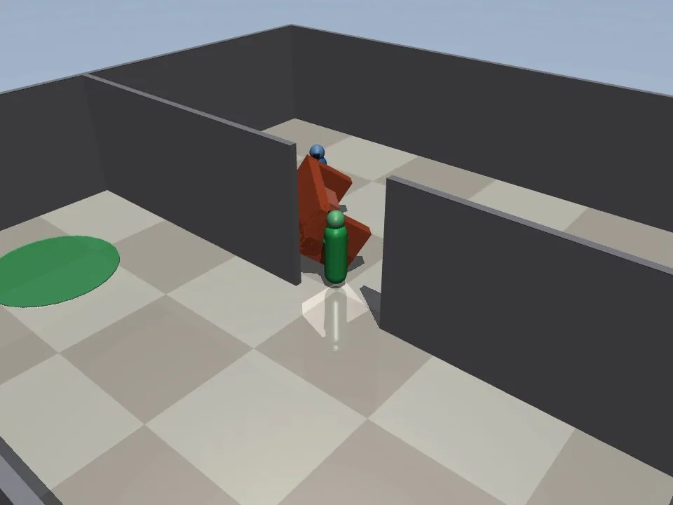

Couch Movers
Zwei Agenten, ein Sofa, und Türen, die zu schmal sind. Two agents, one sofa, and doors that are too narrow.
Vier Wohnungen, die die Agenten nie gesehen haben, gleichzeitig gelöst von derselben Policy. Der grüne Kreis ist das Ziel. Zu sehen ist eine Auswahl gelungener Durchläufe. Four apartments the agents have never seen, solved at the same time by the same policy. The green circle is the goal. Shown is a selection of successful runs.
Zwei simulierte Agenten tragen gemeinsam ein Sofa durch zufällig erzeugte Wohnungen. Greifen ist hier Physik und keine Spielregel: Packt nur einer an, kippt das Sofa und schleift über den Boden. Und weil die Türen schmaler sind als das Sofa lang ist, müssen die beiden es gemeinsam drehen. Two simulated agents carry a sofa together through randomly generated apartments. Grabbing is physics here, not a game rule: if only one of them lifts, the sofa tilts and drags across the floor. And because the doors are narrower than the sofa is long, the two have to turn it together.
Erfolg in 32 Wohnungen der schwersten Stufe, die im Training nie vorkamensuccess in 32 apartments of the hardest level that never appeared in training
Simulationsschritte pro Sekunde in 512 parallelen Wohnungensimulation steps per second across 512 parallel apartments
Training für 250 Millionen Schritte, auf einem Laptopof training for 250 million steps, on a laptop
So funktioniert esHow it works
Simulation auf der GPUSimulation on the GPU
Die Physik läuft in MuJoCo MJX direkt auf der Grafikkarte. Jede Wohnung wird zufällig erzeugt, das Sofa ist 1,80 m lang.The physics runs in MuJoCo MJX directly on the graphics card. Every apartment is generated at random, the sofa is 1.80 m long.
Eigener LernalgorithmusHand-written learner
MAPPO, selbst in JAX geschrieben: Beide Agenten teilen sich ein Netz, sehen einander und werden als Team belohnt.MAPPO, written from scratch in JAX: both agents share one network, see each other and are rewarded as a team.
Vier StufenFour levels
Vom leeren Raum über eine Wand und eine Engstelle bis zur vollen Wohnung mit drei Türen. Die nächste Stufe kommt erst, wenn die vorige sitzt.From an empty room to a wall, a bottleneck and finally a full apartment with three doors. The next level only starts once the previous one works.
